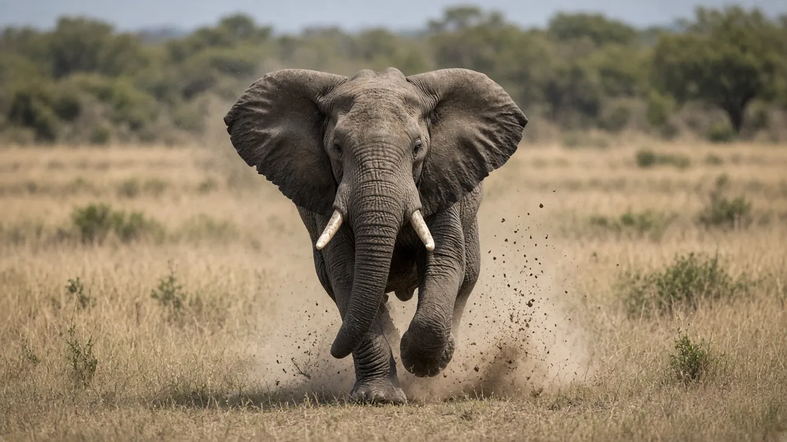

Can elephants jump?
No. A healthy elephant does not jump the way a horse, dog or human can. Its legs are built to carry enormous weight with stiff, columnar support, not to store and release spring energy for a takeoff. Even when an elephant moves at its highest recorded speeds, film studies show it keeps at least one foot on the ground.

The short answer
Elephants cannot jump in the ordinary sense. They do not crouch and spring so that all four feet leave the ground together. Their legs act more like living columns than like the spring-loaded limbs of a kangaroo or deer. That is why the answer to "can elephants jump?" is a clear no for healthy animals under normal conditions, even though they can walk, hurry and even meet some technical definitions of running.
What film of fast elephants shows
In 2003, John Hutchinson, Dan Famini, Richard Lair and Rodger Kram analysed video of Asian elephants moving at high speed and reported the work in Nature. The animals reached about 6.8 metres per second. Their gait can look like a hurried walk, yet some mechanical features fit definitions of running. Critically for the jumping question, the recordings did not show a clear aerial phase in which every foot is off the ground at once. That matches what keepers and field observers have long said: an elephant's "run" is not a leap-and-bound gallop.
For more on top speed and gait, see how fast elephants can run. Body mass helps explain the limit; an adult can weigh several tonnes, as covered in how much an elephant weighs.
Legs built to carry, not to spring
Elephant feet and lower legs are specialised for load. Soft foot cushions spread pressure, and the limb bones stay relatively upright under the body. Anatomical work on African elephants by Weissengruber and colleagues describes crus and pes musculature that supports a semiplantigrade, weight-bearing design rather than a long, elastic Achilles complex tuned for jumping. Animals that jump need strong calf muscles, stretchy tendons and flexible ankles. Elephant lower legs are comparatively poorly suited to that job, which is one reason biomechanics researchers such as Hutchinson have pointed to "wimpy" distal limb muscle and stiff ankles when explaining the lack of jumping.
None of this means the limbs are weak overall. They are extremely strong in compression. They are just not arranged like a pogo stick. For a wider tour of bones and soft tissue, see the elephant anatomy guide.
Why the limit makes sense
Jumping is most useful for small animals that escape predators by clearing obstacles. Adult elephants rarely need that tactic: size itself is a defence, and the herd can form a protective wall around calves. A failed landing from even a short hop would risk catastrophic injury. Elephants do raise one foot at a time, kneel, climb shallow banks and swim (see can elephants swim), but those movements are not jumps.
Fences, trenches and myths
Because elephants do not jump fences, people sometimes assume any tall barrier will stop them. In practice they push posts, break wire, dig under rails or walk around ends. Conflict-mitigation designs therefore focus on strength, electrification and trench geometry rather than height alone. Popular quizzes that treat "elephants can't jump" as trivia are pointing at a real biomechanical fact, not a cartoon rule.
The bottom line
Elephants do not jump. High-speed film shows no all-feet-off-the-ground leap, and their limb anatomy favours supporting tonnes of weight over springy takeoff. They can still move surprisingly fast for their size, swim and reshape landscapes - just not by hopping. More elephant questions are answered in the FAQ and the blog index.
Frequently asked questions
Can elephants jump?
No. Healthy elephants do not jump. Their limb design favours supporting body weight over launching all four feet into the air.
Do elephants ever have all four feet off the ground?
In normal walking and fast locomotion studied on film, adult Asian elephants keep at least one foot planted. They do not show a clear aerial bouncing phase like a galloping horse.
How fast can an elephant go without jumping?
Video analysis of Asian elephants by Hutchinson and colleagues reported top speeds of about 6.8 metres per second (roughly 25 kilometres per hour). That motion can meet some definitions of running even when it still looks like a fast walk.
Why can't elephants jump?
Their lower legs have relatively limited springy muscle and tendon arrangements compared with specialised jumpers, and their ankles are not built for a powerful vertical launch. Huge body mass also makes a failed landing dangerous.
Can baby elephants jump?
Calves are lighter and more playful, but they still do not jump fences or clear gaps the way many smaller mammals do. Their limbs follow the same weight-bearing design.
If elephants can't jump, how do they get past fences?
They push, pull, dig or walk around barriers far more often than they try to clear them. Electrified fencing and carefully designed trenches are used in conflict areas for that reason.
Sources
- Hutchinson, J. R., Famini, D., Lair, R. and Kram, R. (2003). Are fast-moving elephants really running? Nature 422, 493 to 494. DOI 10.1038/422493a
- Weissengruber, G. E., Egger, G. F., Hutchinson, J. R., Groenewald, H. B., Elsässer, L., Famini, D. and Forstenpointner, G. (2006). The structure of the cushions in the feet of African elephants (Loxodonta africana). Journal of Anatomy 209(6), 781 to 792. DOI 10.1111/j.1469-7580.2006.00648.x
- Weissengruber, G. E. and Forstenpointner, G. (2004). Musculature of the crus and pes of the African elephant (Loxodonta africana): insight into semiplantigrade limb architecture. Journal of Morphology 261(2), 126 to 135. DOI 10.1002/jmor.10243
Cite this page
APA
TuskWise. (2026, November 5). Can elephants jump? https://tuskwise.com/blog/can-elephants-jump.html
MLA
“Can elephants jump?” TuskWise, 5 Nov. 2026, tuskwise.com/blog/can-elephants-jump.html.
Chicago
TuskWise. “Can elephants jump?” TuskWise. Last modified November 5, 2026. https://tuskwise.com/blog/can-elephants-jump.html.